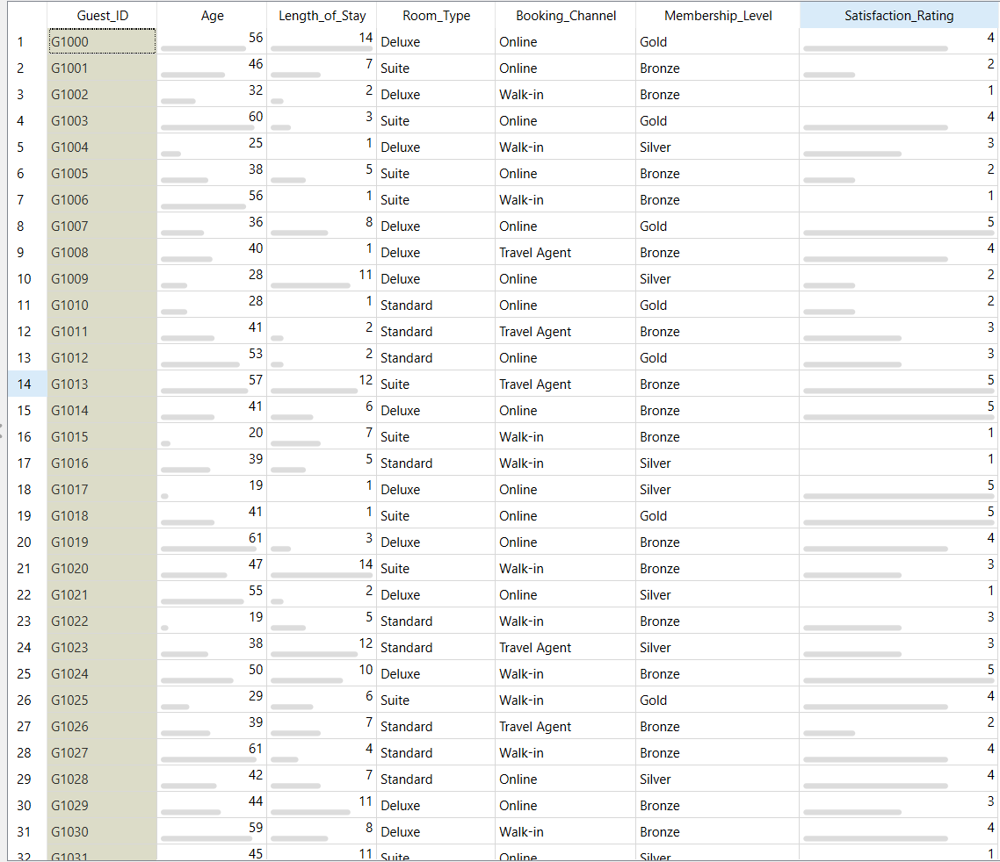
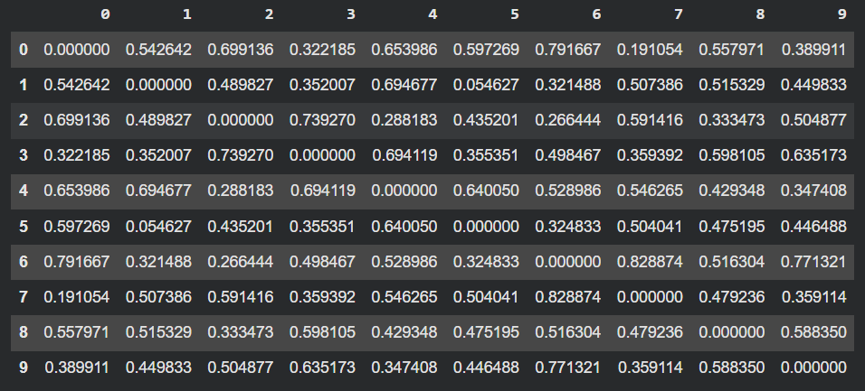
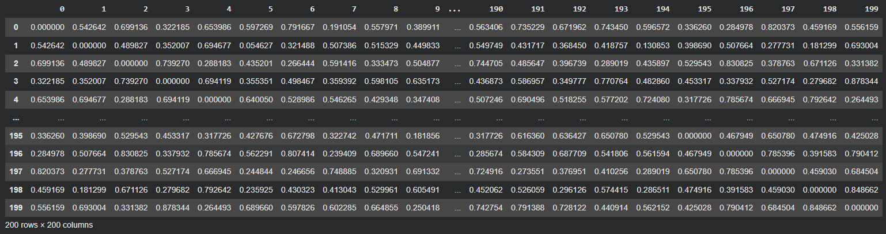

Pertemuan 3#
PENGUKURAN JARAK PADA DATA CAMPURAN#
1. Pendahuluan#
Pada tahap Data Understanding dalam proses Data Mining (CRISP-DM), salah satu langkah penting adalah memahami karakteristik data, termasuk mengidentifikasi tipe atribut, rentang nilai, serta mengukur tingkat kemiripan atau perbedaan antar objek. Pada tugas ini, fokus Data Understanding dilakukan melalui identifikasi tipe data campuran dan perhitungan jarak antar objek sebagai bentuk pemahaman struktur data. Pengukuran jarak menjadi penting terutama ketika data memiliki tipe campuran, seperti numerik dan kategorikal. Tugas ini bertujuan untuk melakukan pengukuran jarak pada dataset dengan tipe data campuran menggunakan metode yang sesuai.
2. Deskripsi Dataset#
Dataset yang digunakan merupakan dataset tamu hotel yang terdiri dari 200 data (observasi). Dataset ini dibuat khusus untuk keperluan analisis pengukuran jarak.
2.1 Struktur Dataset#
Dataset memiliki beberapa tipe atribut:
A. Numerik
Age
Length_of_Stay
Satisfaction_Rating
B. Kategorikal
Room_Type (Standard, Deluxe, Suite)
Booking_Channel (Online, Travel Agent, Walk-in)
Membership_Level (Bronze, Silver, Gold)
C. Identifier
Guest_ID (tidak digunakan dalam perhitungan jarak)

3. Alasan Pemilihan Metode#
Karena dataset memiliki tipe data campuran (numerik dan kategorikal), maka metode jarak yang sesuai adalah Gower Distance.
Metode ini mampu:
Menghitung jarak pada data numerik
Menghitung perbedaan pada data kategorikal
Menggabungkan semua tipe atribut dalam satu perhitungan
Metode lain seperti Euclidean Distance tidak dapat digunakan secara langsung karena hanya cocok untuk data numerik.
4. Proses Perhitungan#
Perhitungan dilakukan menggunakan Google Colab dengan bantuan library Python bernama “gower”.
4.1 Langkah-langkah#
Upload dataset ke Google Colab
Menghapus kolom Guest_ID
Menghitung matriks jarak menggunakan fungsi gower_matrix()
Contoh kode yang digunakan:
Contoh kode yang digunakan:
import pandas as pd
import gower
df = pd.read_csv("hotel_mixed_dataset_200_rows.csv")
df = df.drop(columns=["Guest_ID"])
gower_matrix = gower.gower_matrix(df)
5. Hasil Pengukuran Jarak#
Hasil perhitungan berupa matriks jarak berukuran 200 × 200.
Nilai jarak berada pada rentang 0 sampai 1:
0 menunjukkan dua objek identik
Nilai mendekati 1 menunjukkan objek semakin berbeda


6. Interpretasi Hasil#
Berdasarkan hasil matriks jarak, dapat dilihat bahwa setiap tamu memiliki tingkat kemiripan yang berbeda dengan tamu lainnya.
Sebagai contoh: Jika jarak antara tamu A dan tamu B adalah 0.32, maka kedua tamu tersebut memiliki karakteristik yang cukup mirip. Jika jaraknya 0.69, maka karakteristik keduanya cukup berbeda.
Pengukuran ini dapat digunakan sebagai dasar untuk analisis lanjutan seperti clustering.
7. Kesimpulan#
Pengukuran jarak pada data campuran dapat dilakukan menggunakan metode Gower Distance. Metode ini mampu mengakomodasi berbagai tipe data dalam satu perhitungan.
Hasil pengukuran berupa matriks jarak 200 × 200 yang menunjukkan tingkat kemiripan antar tamu hotel dengan rentang nilai 0 hingga 1.
Dengan demikian, tahap Data Understanding telah berhasil dilakukan melalui proses pengukuran jarak pada dataset campuran.